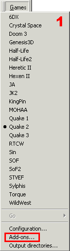
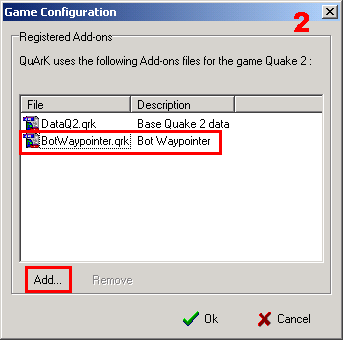
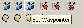

Bot Waypoint Editor
Updated 11 Apr 2005
- QuArK Information Base
- 2. Map editing
- 2.5. Plug-in descriptions
|
|
Bot Waypoint Editor
Updated 11 Apr 2005
|
Upper levels: - QuArK Information Base - 2. Map editing - 2.5. Plug-in descriptions |
|
2.5.5. Bot Waypoint Editor |
[ - - ] |
|
Index |
|
About this bot edit addon |
Fredrick - 11 Apr 2005 | [ Top ] |
|
 This addon was made , to easily edit and customize your waypoints in a friendly way. So far, this editor has been tested for the Quake 2 bot LTK and the HPB half-life bot. The other supports are on their way but with Half-life 1 in mind, most bots are based on it. Podbot etc. Further improvements will be introduced and the amount of waypoint support will follow. How to set this up: First of all, this is a plugin and it needs to be activated for the game you want to use it for. Either Quake 2 or Half-life 1. I used Quake 2 as an example here. Choose Add-ons as shown in picture 1, then click add which is illustrated on picture 2. Find the bot waypointer and add it. It should look like bellow.  |
|
Using the bot waypointer add-on |
Fredrick - 11 Apr 2005 | [ Top ] |
|
After you have activated the add-on, as shown above, you have a new function in the QuArK tool menu. First open the map or .BSP-file you want to edit, you can also open a source map file. Push the new button that have arrived at the left side (default layout) then open the waypoint that have the same name as the map and that ends with *.wpt  If you want to make a completely new waypoint, you have to import another waypoint file, and then delete all of them, except one last waypoint (this will change in later versions.) You can now use the copy/paste functions to add new waypoints. If you see the target1 flag at the top of a waypoint, this is where you can target the waypoint to another waypoint, making more ways for a bot to go. Use the usual + and - icons to add and delete spec/arg-pairs. Here you can se an overview of the waypoints in the map. Actcity3 for Action Quake 2 was used as a example with the ltk bot. Here you can see the node in the middle with 3 links, which means that a bot can go 3 different ways from that waypoint. If you select one waypoint, you can also see different flag settings, whether this is a camping-, sniper-waypoint etc.
On the left you can see the detailed information. Type can be move, jump, ladder etc. Depends on waypoints, then it has 3 targets, start with 0 , 1, 2. target_cost is the value of distance it costs the bots to travel to the specific target and the colors are to separate the lines, if say you have 12 links for a waypoint. You can also change, move and change the cost of each waypoint if required. If the bots needs to jump near a specific area to get trough etc. |
|
The last part |
Fredrick - 11 Apr 2005 | [ Top ] |
|
When you are happy with your work, you can save it by clicking on the bot waypointer that is in the class list. If you use a lot of work, you can actually make waypoint navigation much better than the bot author himself, due to that you have the advantage of overview the structure. Tips: Do not lay down to many waypoints, this is explained in the bot readme. You can probably reduce almost half of the waypoints on a map, by looking at the map structure, like a long hallway with no sidewalk does not need 30 waypoints but maybe only 15, as long as a waypoint can "see each other, it is good enough", and the result is less cpu usage. Another thing which is kind of useful to know is that you might notice that it is very easy to mark say the object behind a waypoint , a wall etc. The waypoint was the object you wanted to select. use the 3d view and try to zoom down so you are almost level with the waypoint. Now it should be easy to click trough the waypoints. I thank Decker for his great work on this project. Without him, my idea would have been still in dreamland :-) - Fredrick aka RiviEr Notice: This is still an experimental work-in-progress, there are lots of bugs, and a lot more work has to be done. |
|
Copyright (c) 2009, GNU General Public License by The QuArK (Quake Army Knife) Community - http://quark.sourceforge.net/ |
[ - Top - ] |